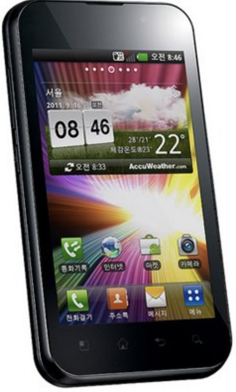
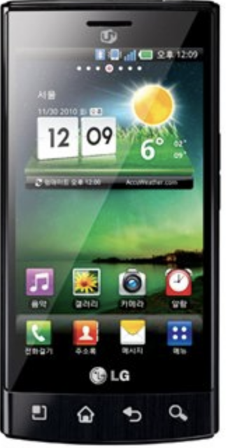
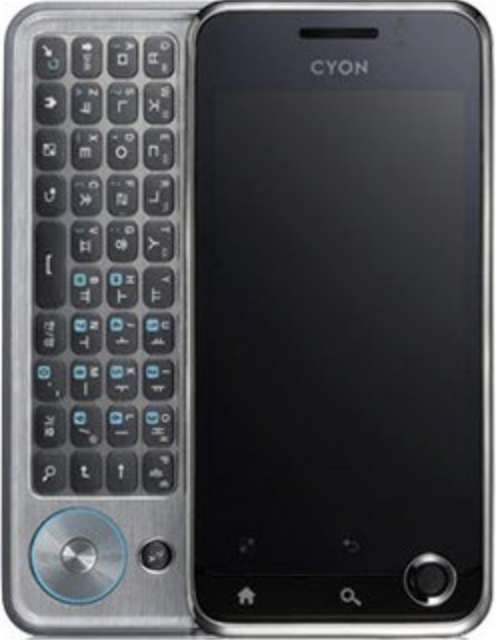
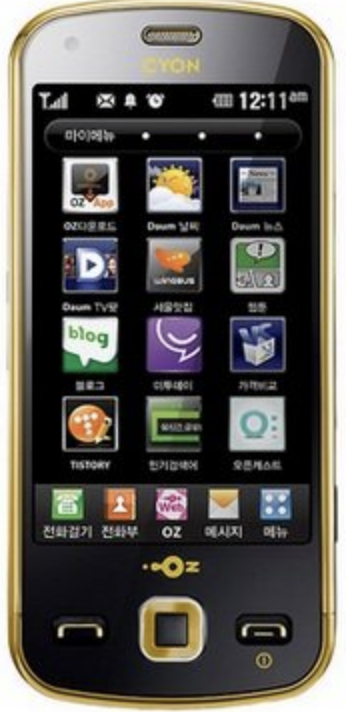
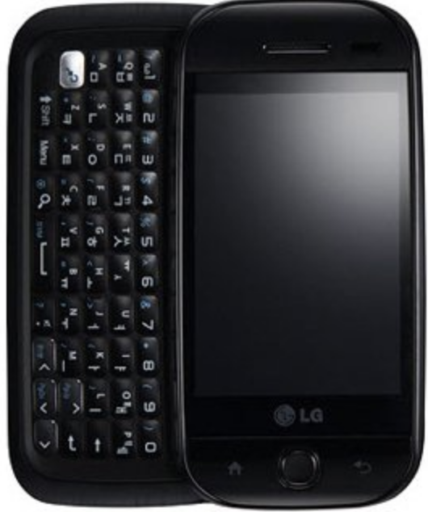

스마트폰
스마트폰은 컴퓨터를 결합한 무선 휴대전화기이다. PC에서 실행되는 운영체제보다 작게 만든 모바일 운영체제를 탑재하여 인터넷 검색, 전자우편, 간단한 문서 편집, 카메라, 오디오 및 비디오 재생등 Pc의 기능을 거의 모두 갖추고 있다.
목차
역사
최초의 스마트폰은 사이먼 으로 추정 된다. 아이비엠 사가 개발했으면 최초로 라스베거스에서 열린 컴댁스에서 컨셉 제품으로 전시돼었으며 그 당시 엄청난 센세이션을 받고 여러 시장에서 주목받은 아이템이었다.
안드로이드
안드로이드(Android)는 리눅스 커널을 기반으로 구글에서 제작한 스마트폰과 같은 플랫폼의 모바일 운영 체제와 미들웨어 및 중요 애플리케이션이 포함된 소프트웨어 집합이다. 구글은 새로운 운영 체제의 버전 공개와 동시에 소스를 공개하고 있다. 이렇게 공개된 소스를 AOSP라고 한다.
아이폰
아이폰은 영어 : iphone은 2007년 1월 9일 애플이 발표한 휴대 전화 시리즈이다. 미국 샌프란시스코에서 열린 맥월드 2007에서 애플의 창업자 중 한명인 스티브 잡스가 발표 했다.
샘플
스마트폰샘플
|  |
 |
 |
 |
 |
Copyright 2017 by kitae